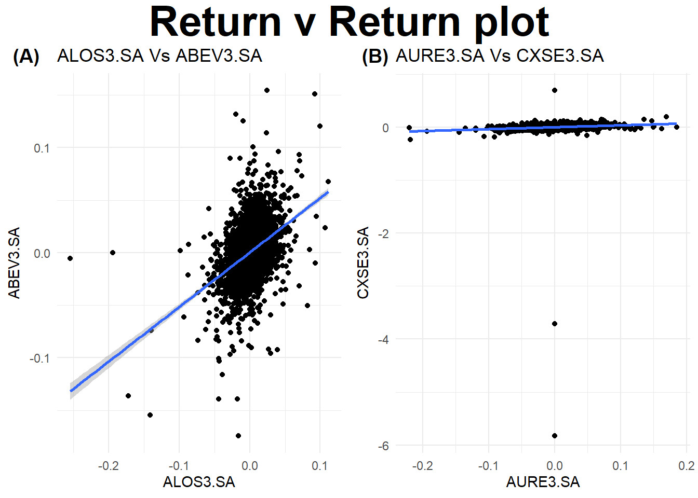

A análise de componentes principais (PCA) e a análise fatorial (FA) são técnicas multivariadas amplamente utilizadas para lidar com a alta dimensionalidade dos dados, um problema conhecido como a “maldição da dimensionalidade” (Bellman, 1961). Esse fenômeno ocorre quando o excesso de variáveis dificulta a interpretação inicial dos dados e a aplicação de outras técnicas estatísticas. Ambas as metodologias têm como objetivo reduzir a complexidade dos dados enquanto capturam a estrutura subjacente, mas diferem em seus propósitos e abordagens.
A PCA é uma técnica que visa reduzir a dimensionalidade de um conjunto de dados multivariados, mantendo o máximo possível da variância original. Ela transforma as variáveis originais em um novo conjunto de variáveis, chamadas Componentes Principais, que são combinações lineares das variáveis originais, cujas características principais são:
São não correlacionadas entre si.
São ordenadas de forma que as primeiras capturam a maior parte da variância dos dados.
Servem como substitutas para as variáveis originais, simplificando análises, visualizações e aplicações subsequentes.
O principal benefício da PCA é permitir que um pequeno número de componentes represente de maneira eficiente a variabilidade presente em um conjunto de dados de alta dimensionalidade. Isso facilita a identificação de padrões, a criação de gráficos e até mesmo a execução de outras análises estatísticas.
Já a FA compartilha da ideia de reduzir a complexidade dos dados, mas vai além ao buscar uma explicação teórica para as correlações entre as variáveis. Seu objetivo é identificar um conjunto menor de fatores subjacentes, não observáveis, que expliquem as relações entre as variáveis. O modelo fatorial parte da premissa de que:
Variáveis altamente correlacionadas pertencem a um mesmo grupo.
Grupos distintos apresentam correlações mais fracas entre si.
Cada grupo de variáveis representa um único constructo subjacente ou fator responsável pelas correlações observadas.
Diferentemente da PCA, a FA assume uma estrutura mais elaborada, onde a matriz de covariância é modelada com base em fatores subjacentes e suas variâncias específicas. A questão central da análise fatorial é verificar se os dados são consistentes com a estrutura proposta pelo modelo.
Embora a PCA e a análise fatorial tenham objetivos e abordagens distintas, ambas são ferramentas essenciais para explorar e interpretar conjuntos de dados complexos. A PCA é particularmente útil quando a redução de dimensionalidade é o foco principal, enquanto a FA é preferida em contextos que exigem a identificação de estruturas teóricas subjacentes. Juntas, essas técnicas oferecem uma base poderosa para a compreensão de relações multivariadas.
Análise Fatorial (FA)
Vamos considerar a estrutura de um modelo de fatores ortogonais:
Suponha que temos um conjunto X de p variáveis com média \(\mu\) e uma matriz de covariância \(\Sigma\). O modelo FA postula que X é linearmente dependente de um conjunto menor de m fatores latentes \(F_1, F_2, ..., F_m\) denomindos fatores comuns e p fontes adicionais de fatores específicos que são fontes de variação \(\varepsilon_1, \varepsilon_2, ..., \varepsilon_p\). Assim temos:
Assim, o modelo de fatores supõe que \(p(p+1)/2\) variâncias e covariâncias de \(X\) possam ser reproduzidas por \(pm\)loadings (\(l_{ij}\)) e \(p\) variâncias específicas \(\psi_i\). Quando \(m = p\) a matriz de covariância de \(X\) dada por \(\Sigma\) pode ser representada exclusivamente por \(LL'\) sendo \(\Psi\) uma matriz nula. Quando \(m << p\) temos que o modelo de fatores proporciona uma maneira simples de representar a covariância de \(X\) com menos parâmetros. Por exemplo, se temos \(p = 12\) e \(m = 2\) descrevemos os \(12\times(13)/2 = 78\) elementos de \(\Sigma\) por meio de \(12\times 2 + 12 = 36\) parâmetros.
Warning: One or more parsing issues, call `problems()` on your data frame for details,
e.g.:
dat <- vroom(...)
problems(dat)
Rows: 89 Columns: 6
── Column specification ────────────────────────────────────────────────────────
Delimiter: ";"
chr (5): X1, X2, X3, X4, X5
lgl (1): X6
ℹ Use `spec()` to retrieve the full column specification for this data.
ℹ Specify the column types or set `show_col_types = FALSE` to quiet this message.
g1 <-ggplot((log_r), aes(x=log_r[,1], y=log_r[,2])) +geom_point() +geom_smooth(method=lm) +labs(x = tickers[1], y = tickers[2], title =paste0(tickers[1], " Vs ", tickers[2])) +theme_minimal()g2 <-ggplot((log_r), aes(x=log_r[,4], y=log_r[,11])) +geom_point() +geom_smooth(method=lm) +labs(x = tickers[4], y = tickers[11], title =paste0(tickers[4], " Vs ", tickers[11])) +theme_minimal()fig <-ggarrange(g1, g2,labels =c("(A)", "(B)"), ncol =2, nrow =1)
Don't know how to automatically pick scale for object of type <xts/zoo>.
Defaulting to continuous.
Don't know how to automatically pick scale for object of type <xts/zoo>.
Defaulting to continuous.
`geom_smooth()` using formula = 'y ~ x'
Don't know how to automatically pick scale for object of type <xts/zoo>.
Defaulting to continuous.
Don't know how to automatically pick scale for object of type <xts/zoo>.
Defaulting to continuous.
`geom_smooth()` using formula = 'y ~ x'
annotate_figure(fig,top =text_grob("Return v Return plot", color ="black", face ="bold", size =30))

corr <-cor(log_r, use ="pair")par(mfrow=c(1,1))corrplot(corr, method ='square', type="upper", order="FPC", addCoef.col ='black')